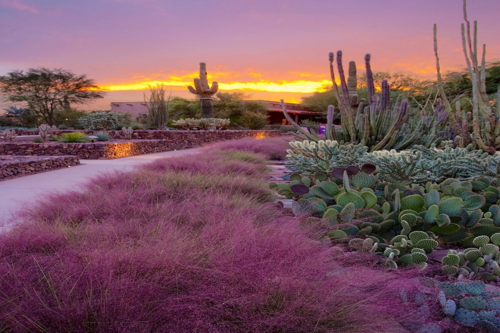

Attractions

Desert Botanical Garden
Think the desert is all dirt and tumbleweeds? Think again. Desert Botanical Garden is home to thousands of species of cactus, trees and flowers from all around the world spread across 55 acres in Phoenix, Arizona.

Grand Canyon
Grand Canyon is one of the most spectacular examples of erosion anywhere in the world—unmatched in the incomparable vistas it offers visitors on the rim. Grand Canyon National Park is a World Heritage Site.